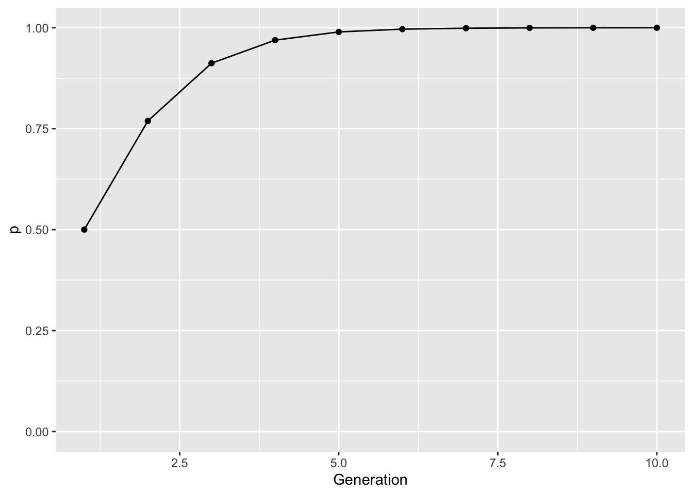

knitr::include_graphics("media/life_cycle.png")

Selection is an evoluationary process that differentiates individuals. It is the most fundamental mechanism of evoluation and in this exercise you will explore how to estimate the effects, at the level of the population, how allele and genotype frequencies change under various selection regimes.
Selection is a foundational process in population genetics and evolutionary biology. It is based upon one of the few Theorem’s we have in this discipline. In this section, we will focus on developing the theory underlying single locus selection models and provide a general framework on which we can use in a variety of scenarios.
As a starting point, lets consider assume that this hypothetical species has:
For this hypothetical species, individuals differ in fertility and/or survival. For simplicity, consider the life history represented below.
knitr::include_graphics("media/life_cycle.png")
To quantify this example, lets add parameters to differential success based upon genotypes as \(m_{XY}\) for fertility and \(\ell_{XY}\) for survival. In our original nomenclature, we now have genotype frequencies as:
| Genotype | Count | Survival | Fertility |
|---|---|---|---|
| \(P\) | \(p^2N_t\) | \(\ell_{AA}\) | \(m_{AA}\) |
| \(Q\) | \(2pqN_t\) | \(\ell_{AB}\) | \(m_{AB}\) |
| \(R\) | \(q^2N_t\) | \(\ell_{BB}\) | \(m_{BB}\) |
From these data, we can create the expectation for allele frequencies in the next generation. For the A allele, we have:
[ f(A) = ]
For simplicity, lets define the \(\ell_{XY}m_{XY}\) as a parameter
\[\begin{aligned} W_{AA} &= \ell_{AA}m_{AA} \\ W_{AB} &= \ell_{AB}m_{AB} \\ W_{BB} &= \ell_{BB}m_{BB} \end{aligned}\]which we will call the Absolute Selective Value (this makes our equations much easier to write without error), simplifying the above to:
[ f(A) = ]
The magnitude of these values depends upon the \(\ell\) and \(m\) parameters and can vary considerably across different taxa. We can standardize these values by dividing by the maximum fertitlity, turning these into Relative Selective Values which are defined as:
| Relative Selective Values | Absolute Value |
|---|---|
| \(w_{AA}\) | \(\frac{\ell_{AA}m_{AA}}{max(\ell_{XX}m_{XX})}\) |
| \(w_{Aa}\) | \(\frac{\ell_{Aa}m_{Aa}}{max(\ell_{XX}m_{XX})}\) |
| \(w_{aa}\) | \(\frac{\ell_{aa}m_{aa}}{max(\ell_{XX}m_{XX})}\) |
For each genotype, we can break this down a bit more.
| Category | AA | AB | BB | Total |
|---|---|---|---|---|
| Relative Fitness | \(w_{AA}\) | \(w_{AB}\) | \(w_{BB}\) | - |
| Frequency | \(p^2\) | \(2pq\) | \(q^2\) | 1.0 |
| Weighted Contribution | \(p^2w_{AA}\) | \(2pqw_{AB}\) | \(q^2w_{BB}\) | \(\bar{w}\) |
| Frequency After | \(\frac{p^2w_{AA}}{\bar{w}}\) | \(\frac{2pqw_{AB}}{\bar{w}}\) | \(\frac{q^2w_{BB}}{\bar{w}}\) | 1.0 |
Notice here the row sums. The sum of genotype frequencies is 1.0 (it better be), as is that for frequency after selection. However, the sum of the weighted contribution is defined as \(\bar{w}\), or average fitness of the population. This standardizes the individuals genotypic contributions and can be used to estimate allele frequencies for the next generation as:
[ p_{t+1} = ]
Lets use this relationship and define a function in that allows us to explore the relationship between the relative fitness values (the \(w_{xx}\) values) and how allele frequencies change. This function is going to be a pretty easy thing, essentially iterating the stuff through the equations above and iterate across generations.
So, instead of doing a bunch of comments, I’m going to just outline what needs to be done in order and let you look at the code and see how it is implemented. Essentially, we need to write a function that:
In the code, it looks like:
This should work. Let’s test it. You should always try to see if your functions give you values you know are true, if it cannot then it is a poor function. Here are some situations.
If I put no parameters, it should use the defaults and return 100 generations of 0.5 (all selective values are equal and \(p = q\)).
iterate_selection() [1] 0.5 0.5 0.5 0.5 0.5 0.5 0.5 0.5 0.5 0.5 0.5 0.5 0.5 0.5 0.5 0.5 0.5 0.5
[19] 0.5 0.5 0.5 0.5 0.5 0.5 0.5 0.5 0.5 0.5 0.5 0.5 0.5 0.5 0.5 0.5 0.5 0.5
[37] 0.5 0.5 0.5 0.5 0.5 0.5 0.5 0.5 0.5 0.5 0.5 0.5 0.5 0.5 0.5 0.5 0.5 0.5
[55] 0.5 0.5 0.5 0.5 0.5 0.5 0.5 0.5 0.5 0.5 0.5 0.5 0.5 0.5 0.5 0.5 0.5 0.5
[73] 0.5 0.5 0.5 0.5 0.5 0.5 0.5 0.5 0.5 0.5 0.5 0.5 0.5 0.5 0.5 0.5 0.5 0.5
[91] 0.5 0.5 0.5 0.5 0.5 0.5 0.5 0.5 0.5 0.5It should be stable for other values of \(p\) (I’ll do 20 generations for brevity):
iterate_selection(p=0.42,T=20) [1] 0.42 0.42 0.42 0.42 0.42 0.42 0.42 0.42 0.42 0.42 0.42 0.42 0.42 0.42 0.42
[16] 0.42 0.42 0.42 0.42 0.42If I make selection against one of the alleles, I should have fixation for the others. Here I will select against the \(A\) allele:
iterate_selection(wAA=0,wAB=0,T=10) [1] 0.5 0.0 0.0 0.0 0.0 0.0 0.0 0.0 0.0 0.0OK, so it appears to be giving us stuff that what we expect. From here it would be easy to explore a variety of different selection regimes. Lets start with a simple example.Consider a single locus that contributes to variability in both fertility and survival. Here are some parameters.
AA genotype average 100 offspring, twice as much as that for the heterozygote (AB) and four times as much as individuals with the BB genotype.AA genotype have an observed survival of 75%, those with the AB genotype have 50%, and those with the BB have 20%.Under this regime, the relative values are:
| Genotype | \(\ell_{XX}\) | \(m_{XX}\) | \(W_{XX}\) | \(w_{XX}\) |
|---|---|---|---|---|
AA |
\(0.75\) | \(100\) | \(75\) | \(1.0\) |
AB |
\(0.50\) | \(50\) | \(25\) | \(\frac{1}{3}\) |
BB |
\(0.20\) | \(25\) | \(5\) | \(\frac{1}{15}\) |
Through time, this would change allele frequencies (assuming they start out at \(p=q\)) as:
library(ggplot2)
df <- data.frame( Generation=1:10, p=iterate_selection(wAB=1/3, wBB=1/15, T=10))
ggplot( df, aes(x=Generation, y=p)) + geom_line() + geom_point() + ylim(c(0,1))
So, through time, we see a relatively rapid change in allele frequencies. This is evolution, sensu stricto. To parameterize the amount of change in allele frequencies we can take the equation for \(p_{t+1}\) and \(p_t\) and solve throwing away the subscripts of which generation is which:
\[\begin{aligned} \delta p &= p_1 - p_0 \\ &= \frac{p^2w_{AA} + pqw_{AB}}{\bar{w}} \\ &= \frac{p^2w_{AA} + pqw_{AB}}{\bar{w}} - p_0\\ &= \frac{p^2w_{AA} + pqw_{AB}}{\bar{w}} - p_0\frac{\bar{w}}{\bar{w}}\\ &= \frac{p^2w_{AA} + pqw_{AB} + p_0(q^2w_{AA} + 2pqw_{AB} + q^2w_{BB})}{\bar{w}}\\ &\cdots\;several\;simplifications\;\cdots\\ &= \frac{pq[p(w_{AA} - w_{AB}) - q(w_{BB} - w_{AB})]}{\bar{w}} \end{aligned}\]The strength of selection can be estimated from looking at the relative allele frequencies for populations before and after selection. In the lecture, we covered an example based upon resistance to prion disease. There we quantifed genotypes frequencies as \(P\), \(Q\), and \(R\) for those before selection and \(\hat{P}\), \(\hat{Q}\) and \(\hat{R}\) for genotype frequencies after selection. Their relationships are given by:
\[\begin{aligned} \hat{P} &= P\; \ell_{AA}\; m_{AA} \\ \hat{Q} &= Q\; \ell_{AB}\; m_{AB} \\ \hat{R} &= R\; \ell_{BB}\; m_{BB} \\ \end{aligned}\]If we take the genotype frequencies and divide the homozygotes by the heterozygotes and reorganize the relationship, we get:
\[\begin{aligned} \hat{\ell}_{AA}\hat{m}_{AA} = & \frac{\hat{P}Q}{\hat{Q}P}\\ \hat{\ell}_{BB}\hat{m}_{BB} = & \frac{\hat{R}Q}{\hat{Q}R}\\ \end{aligned}\]And from this we can estimate fertility and survival values by genotype. In the lecture, we assumed that fertility, the \(m_{xx}\) parameters, were not changed so we dropped them (or at least thought they were all equal to 1.0).
This is sufficient information for you to estimate the consequences of selection from real data.